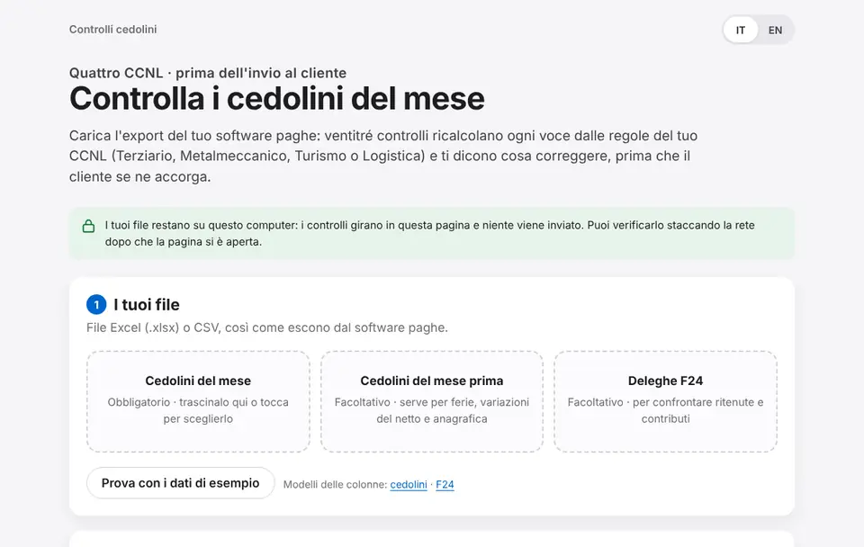

Trovare gli errori in busta paga prima del cliente
Cliente: Uno studio paghe che elabora i cedolini di sei clienti e 182 dipendenti con quattro CCNL (Terziario, Metalmeccanico industria, Turismo e pubblici esercizi, Logistica), con errori inseriti apposta.
Quali cedolini sono sbagliati prima dell'invio, quali errori di un software paghe configurato male i controlli non possono vedere, e gli stessi cedolini alimentano bene il calcolo del divario retributivo?

Cosa ho fatto
- Ho scritto ventitré controlli che ricalcolano ogni voce dal CCNL del cliente, dall'INPS e dalle regole fiscali del 2026, non dal software paghe: minimi, aliquote INPS, malattia, IRPEF, TFR, preavviso e indennità sostitutiva.
- Ho fatto girare un anno intero, gennaio-dicembre 2026, e poi nove software configurati male, ognuno ricalcolato a cascata così che ogni totale torni, e ho misurato quali controlli li vedono e quando.
- Ho dato a ogni voce del cedolino la sua natura per la direttiva europea sulla trasparenza retributiva e ho trasformato l'anno nell'estratto del kit della trasparenza: il codice del kit trova gli stessi divari.
- Ho consegnato i controlli in tre forme che danno lo stesso risultato: Python, un foglio con formule vive per Google Sheets e uno strumento nel browser in italiano e in inglese; ogni fonte con una data dice fino a quando vale.
Cosa ha trovato
- Una regola sbagliata (gli scaglioni IRPEF dell'anno prima, la tranche di giugno non caricata, 13 mensilità invece di 14) si vede subito: i controlli ricalcolano la regola e non si fidano del software.
- Un livello sbagliato dall'assunzione passa tutti i controlli per dodici mesi, 1.877,98 € netti pagati in più; un part-time inserito senza lettera si vede una volta, nel mese del cambio, poi diventa la base.
- Dieci dipendenti sotto il minimo del CCNL, 212,40 € di ritenute mancanti in un F24 e due indennità sostitutive del preavviso sbagliate: senza i ratei, o una dimissione trattenuta con i giorni del licenziamento.
Con dati reali
- Una prova sui cedolini veri di un cliente, nel browser, così i file non lasciano lo studio.
- Un confronto a campione, una volta l'anno, tra anagrafica e lettere di assunzione: il punto cieco che i conti non chiudono.
- Operai e personale viaggiante, con altre regole per malattia e preavviso.
Come è verificato. Il foglio verificato su Python su 1.789 valori e ricalcolato da LibreOffice nella CI; lo strumento nel browser su 3.991 valori; il kit della trasparenza ricalcola nella CI i divari dell'articolo 9 sull'estratto; la serie FOI dell'ISTAT e la prima fascia INPS 2026 lette alla fonte il 25 novembre 2026.
Dati sintetici o pubblici; non è consulenza legale, retributiva o finanziaria. Cifre pubblicate il 25 novembre 2026. Domenico Perroni · consulenza HR, people analytics, retribuzioni · Kraków · d0m3n1c0x.github.io